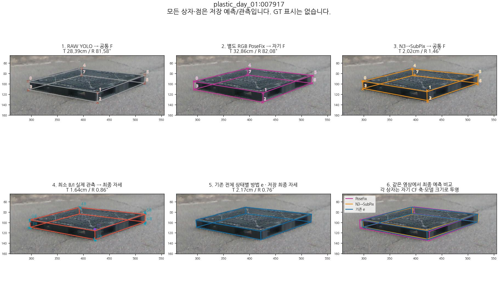
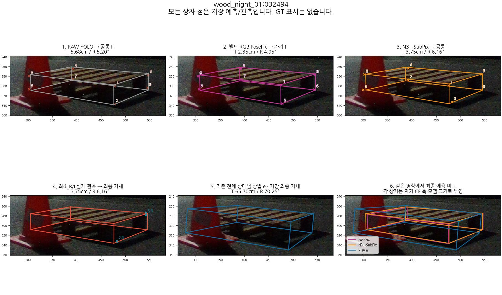
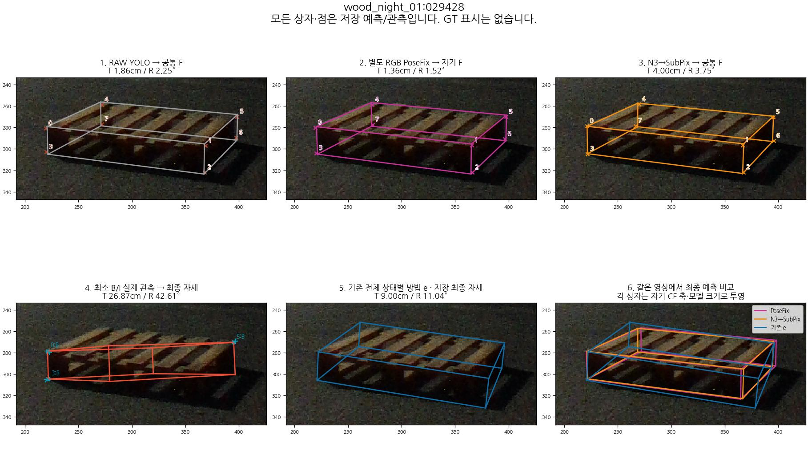
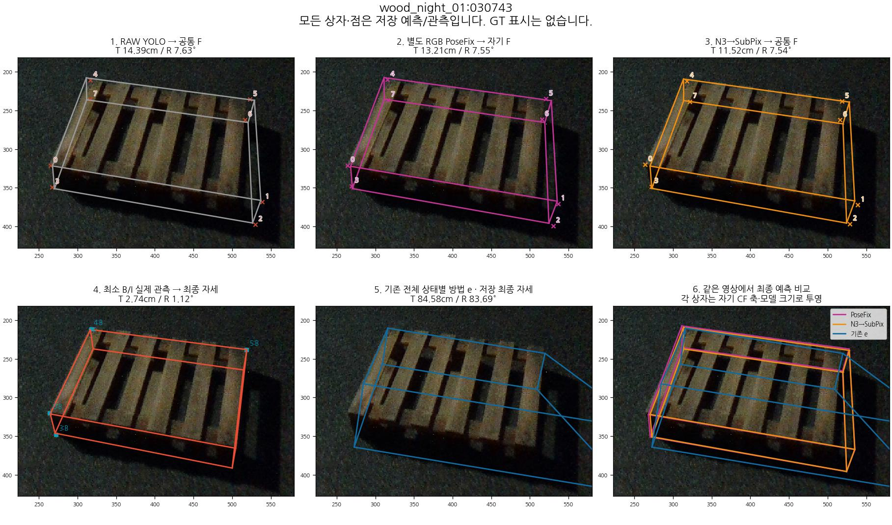
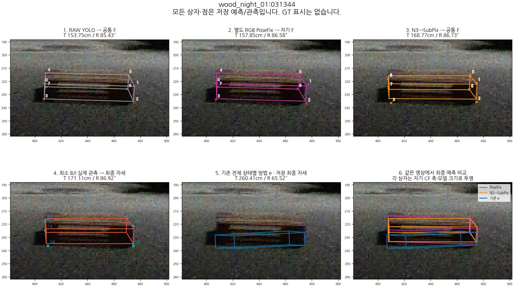
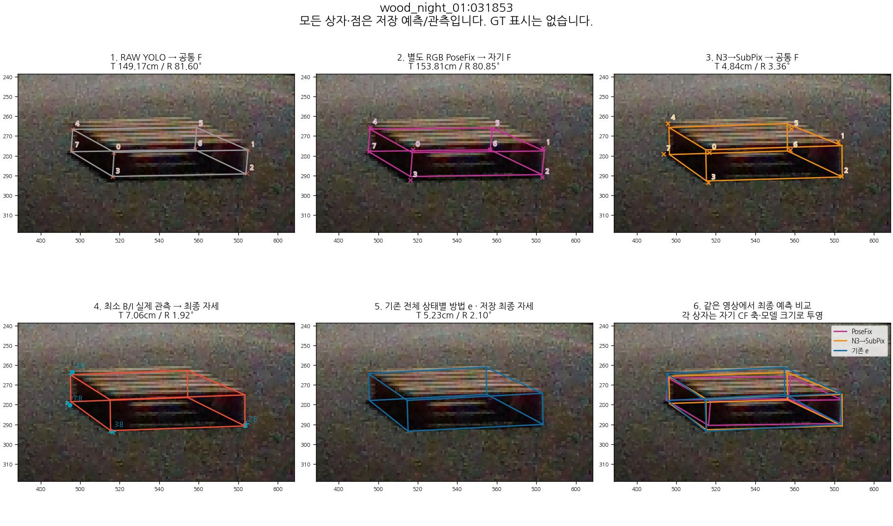

plastic_day_01:007917
PoseFix 실패 → 기존 e 성공 · 위치 개선 최대

최소 B/I 상태: 0:B 1:I 2:B 3:B 4:B 5:B 6:B 7:S, accepted=True, fallback=False
공통 영상의 저장된 실제 단계입니다. e는 비교 예측이며 GT가 아닙니다. 4번은 최소 B/I 관측이고 5번은 기존 전체 e의 최종 자세로 서로 다른 경로입니다. e의 저장되지 않은 중간 과정을 만들어 연결하지 않았습니다. S는 B/I 관측에 넣지 않으며 최종 모델에서 투영합니다. 0–7 번호는 각 경로의 native 코너 번호입니다.
PoseFix 실패 → 기존 e 성공 · 위치 개선 최대

최소 B/I 상태: 0:B 1:I 2:B 3:B 4:B 5:B 6:B 7:S, accepted=True, fallback=False
PoseFix 성공 → 기존 e 실패 · 위치 손상 최대

최소 B/I 상태: 0:O 1:O 2:B 3:O 4:O 5:B 6:U 7:S, accepted=False, fallback=True
N3→SubPix 성공 → 최소 BI 실패 · 위치 손상 최대

최소 B/I 상태: 0:B 1:U 2:U 3:B 4:U 5:B 6:O 7:S, accepted=True, fallback=False
N3→SubPix 실패 → 최소 BI 성공 · 위치 개선 최대

최소 B/I 상태: 0:B 1:U 2:U 3:B 4:B 5:B 6:S 7:S, accepted=True, fallback=False
기존 e의 최대 위치 오차

최소 B/I 상태: 0:I 1:B 2:B 3:B 4:B 5:B 6:S 7:B, accepted=True, fallback=False
PoseFix 실패 → N3→SubPix 성공 · 위치 개선 최대

최소 B/I 상태: 0:O 1:O 2:B 3:B 4:B 5:O 6:S 7:B, accepted=True, fallback=False